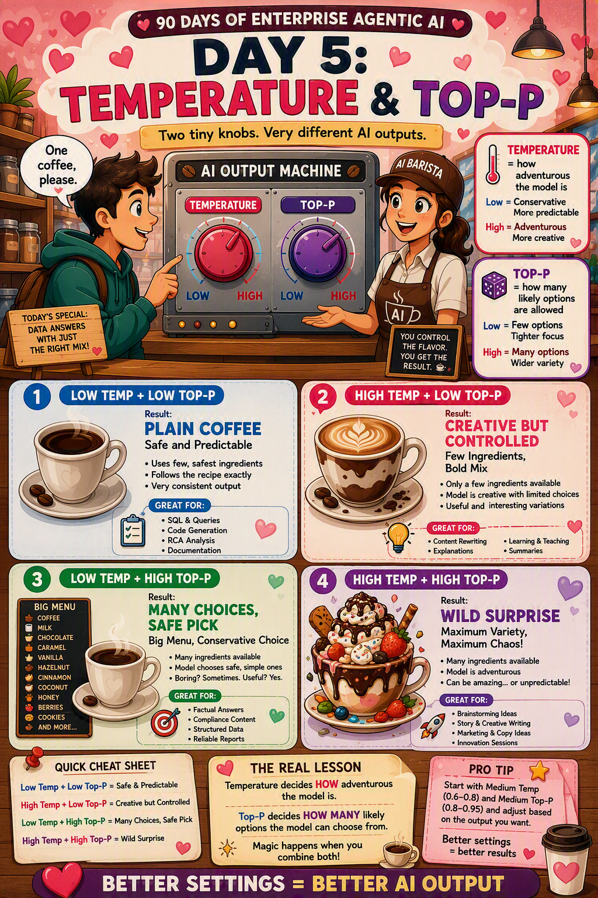

📜 The 30-second brief
Temperature and Top-P are two settings that control how an AI picks its next word. They do not add knowledge and they do not make the model smarter. They only change how it chooses among the words it already considers likely.
Here is the mindset shift: at every step the model produces a list of possible next words with probabilities. Temperature reshapes those probabilities; Top-P decides how many of them are even allowed to compete. Low settings give safe, predictable answers. High settings give creative, varied, sometimes surprising ones.
💌 A fresh analogy: ordering food with a friend
Imagine asking a friend, "Where should we eat tonight?"
A low-temperature friend always says the same safe answer: "Our usual place." Reliable, but never surprising. A high-temperature friend throws out bold ideas: "Thai! No wait, that new ramen spot! Or street tacos!" Exciting, but sometimes a little random.
Now Top-P is like the size of the menu you let them choose from. A small Top-P means "only pick from our top 3 favourite restaurants." A large Top-P means "pick from every restaurant in the city, even the weird ones." Temperature changes your friend's mood; Top-P changes how big the choice list is.
⚙️ What actually happens under the hood
- The model looks at your text and produces a probability for every possible next token (Note 2).
- Temperature stretches or flattens those probabilities. Low temperature makes the top choice even more dominant; high temperature makes weaker choices more competitive.
- Top-P (nucleus sampling) then keeps only the smallest group of top words whose probabilities add up to P (for example 0.9), and ignores the long tail of unlikely words.
- The model randomly samples the next word from whatever survived those two filters, then repeats.
So the order is roughly: probabilities → temperature reshapes them → Top-P trims the pool → sample a word.
🧩 Temperature vs Top-P at a glance
| Aspect | Temperature | Top-P (nucleus) |
|---|---|---|
| Controls | How boldly probabilities are reshaped. | How many candidate words are allowed. |
| Low value | Focused, safe, repetitive. | Only the very top words. Tight, predictable. |
| High value | Creative, varied, riskier. | Wider pool, more variety and surprise. |
| Typical range | 0.0 to 1.0 (sometimes up to 2.0). | 0.0 to 1.0 (often 0.9). |
| Rule of thumb | Set the mood. | Set the menu size. |
💡 Why it matters
- Consistency: low settings make answers reproducible — vital for facts, code, data, and RCA.
- Creativity: high settings help with brainstorming, storytelling, marketing, and idea generation.
- Reliability vs freshness: the same question can feel robotic or lively depending on these dials.
- Debugging: if answers feel too random, lower the values; if too repetitive, raise them.
- Cost and safety: in production, teams usually keep temperature low for predictable, testable behavior.
🏭 Real-world example: incident summary vs campaign ideas
Suppose you use the same AI for two very different jobs.
| Task | Recommended setting | Why |
|---|---|---|
| Summarise an incident and draft an RCA | Low temperature, low-to-mid Top-P | You need accurate, consistent, repeatable output you can trust and review. |
| Brainstorm names for a new internal tool | Higher temperature, higher Top-P | You want variety, surprise, and many fresh options to choose from. |
Same model, same prompt style — only the dials changed. That is the practical power of understanding these two settings.
🔒 Things no textbook tells you
- Do not crank both at once. High temperature and high Top-P together can produce chaotic, off-topic text. Change one dial at a time.
- Temperature 0 is not truly deterministic. It is close to greedy decoding, but hardware and implementation details can still cause tiny differences.
- Creativity is not intelligence. A high temperature does not make the model know more — it just makes it wander more.
- High settings raise hallucination risk. More randomness means more chances to drift away from facts (Note 6).
- Top-P adapts, top-k does not. Top-P keeps a flexible number of words based on probability mass, while the older "top-k" always keeps a fixed count.
- Defaults are opinions. Many tools default around temperature 0.7 and Top-P 0.9 — good for chat, but not always right for your task.
⚠️ Common pitfalls & misconceptions
- "Higher temperature means smarter." No. It means more random, not more knowledgeable.
- "Temperature and Top-P are the same thing." No. One reshapes probabilities, the other limits the candidate pool.
- "Temperature 0 gives the perfect answer." No. It gives the most predictable answer, not always the best one.
- "These settings fix hallucination." No. Lower values reduce randomness, but grounding still matters.
- "One setting fits every task." No. Facts want low, creativity wants high.
🎓 Quick self-test
- What does temperature control?
How boldly the model reshapes its next-word probabilities. - What does Top-P control?
How many likely words are allowed into the candidate pool. - Which setting for factual, repeatable answers?
Low temperature (and modest Top-P). - Which setting for brainstorming?
Higher temperature and higher Top-P. - Does high temperature make AI more knowledgeable?
No — only more random and varied. - What is a safe habit when tuning?
Change one dial at a time and test the result.
📚 Key terms to carry forward
- Temperature: a setting that reshapes next-word probabilities (safe vs creative).
- Top-P (nucleus sampling): keeps the smallest set of top words summing to probability P.
- Top-K: an older method that keeps a fixed number of top words.
- Sampling: randomly choosing the next word from the allowed candidates.
- Greedy decoding: always choosing the single most likely word.
- Determinism: getting the same output every time for the same input.
⚡ 60-second flashcard
| Define temperature | How boldly AI reshapes word probabilities — low is safe, high is creative. |
| Define Top-P | The smallest group of most-likely words allowed to compete. |
| Mental model | Temperature = your friend's mood. Top-P = the size of the menu. |
| Low settings | Focused, consistent, factual, repeatable. |
| High settings | Creative, varied, surprising, riskier. |
| Use LOW for | Facts, code, data, RCA, structured output. |
| Use HIGH for | Brainstorming, stories, marketing, ideas. |
| Golden habit | Change one dial at a time, not both. |
| Warning | High settings raise hallucination risk. |
| Not true | Higher temperature does not mean smarter. |
🖼️ Today's cheat sheet
The same image shared on the LinkedIn post for Note 5.

✨ Next spark
You now control how safe or creative AI is. But more creativity brings more risk of confident mistakes. Note 6 — Hallucination — is where we learn why AI sometimes sounds sure but is completely wrong.